|
I have chosen an L-shape structure to
demonstrate the best practices for creating
joined walls, with the aim of using the
least number of brushes and visible faces.
I am now assuming you know how to create,
caulk, duplicate, move and resize brushes -
please refer to earlier lessons for a
refresher if you don't remember.
Run Radiant. Open the tutorial
map. Leave the grid size at the
default 4 for the moment. Press
ctrl+tab to see the side 2D view. We
are going to move the environment down
a little, in order to make the upper face of
the floor run along the 0 (zero) Z
co-ordinate. This will make it easier
when we are creating new brushes, because
they will sit just on the ground by default,
rather than just through it.
Draw a box around the whole environment
(mousewheel zoom out to see it all if
needed), and either right-click and
Select/Select Complete Tall or click the
indicated button, whichever you feel comes
more naturally. If you can't see
everything in the 2D window you can scroll
the view by right-clicking it and dragging
around.
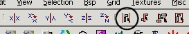
You should see this:
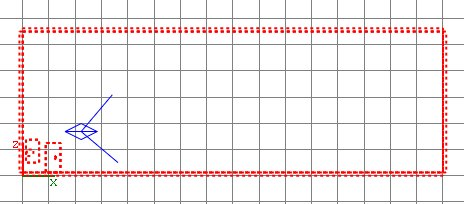
Zoom in so you can see the grid, and move
the whole lot down one grid notch.
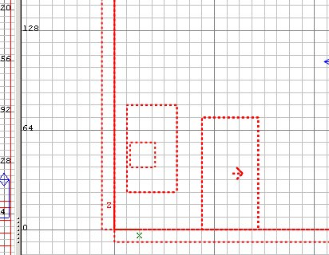
Press ESC. Press ctrl+tab twice to
get the overhead view, and zoom out so you
can see the whole area again. Set
the grid size to 8.
Draw a brush as shown below. Cycle
thru ctrl+tab to confirm the brush is
sitting on the floor level and is 128
high. If it isn't (because Radiant
remembers the last brush manipulation you
were doing) adjust it so that it is.
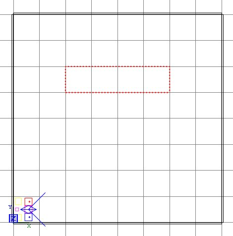
Caulk it. Change the grid scale
to 5, and reduce the width of the wall
by putting the cursor under the selection
and dragging up. You may want to zoom
in a little to clarify the grid lines for
yourself.
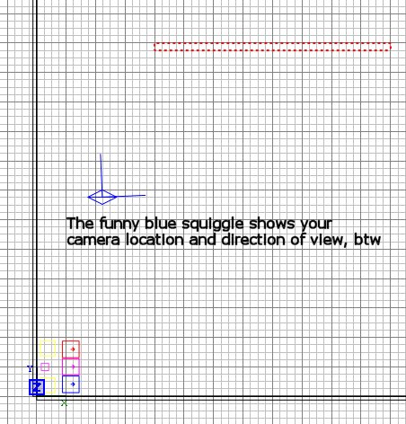
Press ESC. In 3D view, select the
face that will be the inner wall - it's the
south facing wall that faces back to where
the player start points are.
Apply Textures/chateau wood_test texture,
or some other wall texture if you
like. Press ESC.
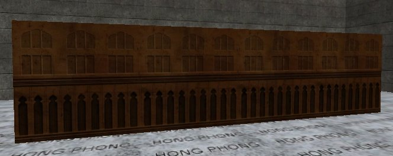
In 3D view take yourself around to the
outside face and apply an exterior
texture. I'm using
Textures/town/town_wall church_c01dm.
Press ESC again to deselect the face.
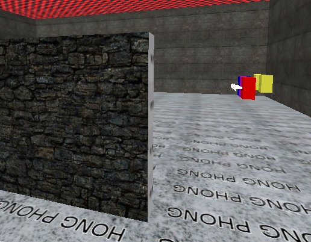
Now select the wall brush and duplicate
it, then rotate the new wall by 90
degrees, in the usual way...
 ...for making a wall
at right-angles to the previous wall, and
position it as shown.
...for making a wall
at right-angles to the previous wall, and
position it as shown.
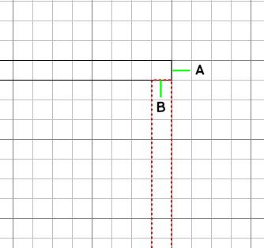
What you have here is the wrong
way to make adjacent walls. We will correct
this is a minute, but I'm doing this to show
you why you should avoid this construct when
possible (sometimes it will be
unavoidable).
With walls butted up like this, the face A
will need an outer wall texture applied
(making 3 outer faces so far), and the face B
will overlap some of the inner texture
applied to the other brush, which is
wasteful because it means a face is textured
for its full length yet part of it cannot be
seen.
There is a more efficient way to arrange
the two walls:
Move the second wall up one notch so that
the brushes overlap.
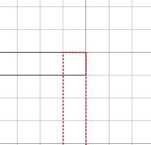 Press
E to bring up the edges
markers. 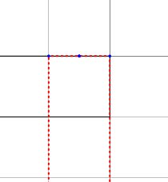
The little blue dots mark the edge points we
can manipulate. Click on the left blue dot
and drag it one notch down. 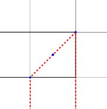
Press shift+alt+click on the other wall
brush to select it, and press E to
show its edge points.
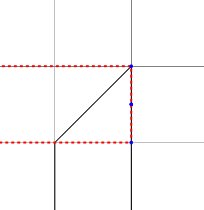
Click on the bottom blue dot and drag it
left one notch. Press ESC twice to
turn off edge point display and deselect the
brush.
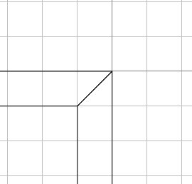
You can see we have made a nice join now,
that means we only need 2 outer faces and
there is no wasted display of inner faces
because there is nothing partially
overlapping a textured face.
We're going to this trouble, when we
hadn't for the tiny room, because the outer
faces are going to be visible so it isn't ok
to leave chunky gaps on the outside faces -
it's all got to join and seal so that people
outside can't see ugly joins or see through
gaps, and vice versa.
|